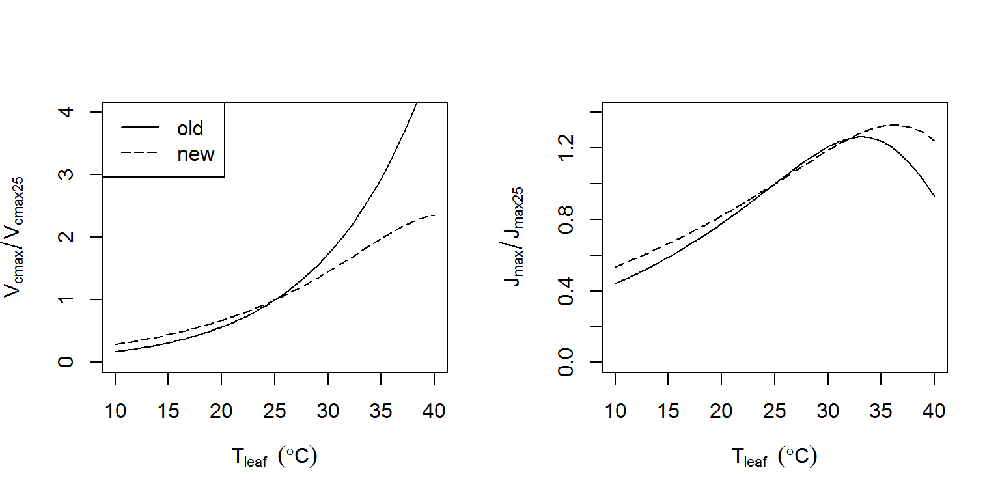

The fitaci function includes the option to correct the estimated Vcmax and Jmax for temperature, so that all parameters can be (by default) be expressed at 25C. To do this correction, Photosyn (and hence fitaci) includes a default temperature correction. If the curves are fit with the argument Tcorrect = TRUE (the default), Vcmax and Jmax are fit, and recalculated for 25C using the usual Arrhenius-type equations.
The original version of plantecophys used temperature corrections from an experiment with Eucalyptus, and were never meant to be general - but the defaults were unfortunately never adjusted. In this document, we describe forthcoming work on a general parameterization for Jmax and Vcmax temperature dependencies, based on a comprehensive literature review.
As of plantecophys version 1.4, the default temperature parameters in Photosyn are set to these new values. This means that if you fit curves with Tcorrect = TRUE, you will get slightly different answers (unless you used your own parameters in the first place).
We compiled published and unpublished leaf level standard photosynthetic carbon dioxide response measurements (referred as ACi curves hereafter) for five plant functional types i) broadleaf deciduous trees, ii) broadleaf evergreen trees, iii) needle evergreen trees, iv) tropical evergreen trees and v) Arctic) across tropical wet evergreen forests to arctic tundra. Each of the dataset in the database contains ACi curves measured at multiple leaf temperatures (at least 3 temperature levels) and saturating irradiance levels. The database covers 141 tree species from 37 experiments conducted around the world, with 15 sites from Australia, six sites from north America, one sites from South America, three sites from Central America, five sites from Europe, one site from Africa and four sites from Asia. Sites latitude ranged from 42.81S to 71.28N. Sites mean annual growing season temperature (long-term average temperature of months where mean monthly temperature is above 0C) ranged from 3℃ to 30℃. The synthesized quality controlled (described later in detail) dataset contains 3498 ACi curves measured from 1◦C to 50◦C leaf temperatures.
The method of data collection was consistent across all datasets. Except for few occasions, measurements were made using the Licor 6400 portable photosynthesis system with standard leaf chambers. Measurements were first started at ambient CO2 levels (360-400 ppm; depending on the year of data collection) and changed stepwise through a series of subambient (40-400 ppm) to superambient saturating CO2 concentrations (400-2000 ppm). The same protocol of measurement was repeated on the same leaf at different leaf temperatures. We visually inspect each and every individual ACi curve in the dataset for possible outliers and erroneous data points. We used following criteria (De Kauwe, 2016) to screen individual ACi curves for the analysis performed in this paper where i) if a curve’s first point is measured at ambient CO2 concentrations < 300 ppm or > 400 ppm, ii) if the fitted function has a R2 <0.99 (however, if the number of replicates available for a given occasion is limited, the R2 was reduced to 0.90)
We parameterized the Farquhar model using fitacis function within plantecophys package (Duursma, 2015) in R version 3.3.2 (R Development Core Team, 2012). We assumed the Bernacchi et al. (2001) kinetic constants for the temperature response of Kc, Ko and Γ^* as given in Medlyn et al. (2002a). The estimated parameters, Vcmax and Jmax are apparent values as we assumed infinite mesophyll conductance (gm). The significance of gm on Vcmax and Jmax estimates and their temperature response has been discussed elsewhere, but due to lack of proper parameterization for temperature response of gm, we did not include it in our analysis (see Rogers et al., 2017).
The temperature response of Vcmax and Jmax were fitted using the peaked Arrhenius functions. Model parameters were estimated in non-linear mixed model framework using the nlme function within the nlme package. Replicate trees and leaves of the same species were included as random effects in models. However, for some occasions (ex. Rainforest datasets), individual species were considered as a random variable in the model. Note for some datasets, parameter estimates were done in conventional non-linear framework due to lack of sufficient number of replicates for mix model approach.
The fitted curves and data compilations are not included in this article, as they will be published in the near future. Below are a table with the old and new parameter values, and a figure illustrating the difference. The most significant change is to be seen at high temperature (> 30C).
Table 1. Old and new parameter values for activation energy (J mol-1; EaV for Vcmax, EaJ for Jmax), and delta S (J mol-1 K-1). The EdVC and EdVJ parameters control the peakedness of the curve; note that in the old parameterization Vcmax did not follow a peaked dependency on temperature. If the exact behaviour of plantecophys < 1.4 is desired, use the old parameter values in the call to Photosyn or fitaci.
| Parameter | Old value | New value |
|---|---|---|
| EaV | 82620.87 | 58550 |
| delsC | 645.1013 | 629.26 |
| EdVC | 0 | 200000 |
| EaJ | 39676.89 | 29680 |
| delsJ | 641.3615 | 631.88 |
| EdVJ | 200000 | 200000 |
Figure 1. Comparison between old and new temperature responses of Vcmax and Jmax.
